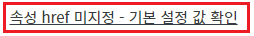
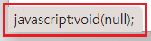
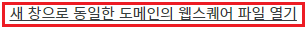
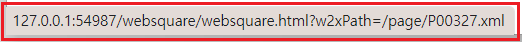
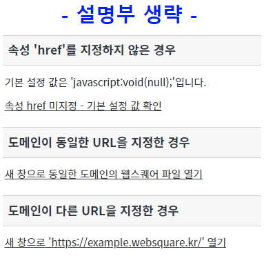
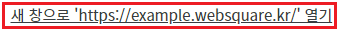
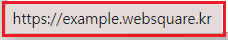
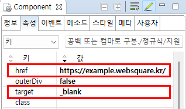

Anchor의 'href' 속성을 설정별로 비교할 수 있는 예제입니다.
'href' 속성에 값을 설정할 때, '#'(해시) 키워드를 사용하여 특정 요소로 스크롤을 이동하는 기능은 프로젝트의 레이아웃 구조에 따라 사용이 불가할 수 있습니다.
'href' 속성을 지정하지 않은 경우
도메인이 동일한 URL을 지정한 경우
도메인이 다른 URL을 지정한 경우
1
STEP 1: 실행된 결과를 확인합니다.
예제 영역 ''href' 속성을 지정하지 않은 경우'에 구성된 컴포넌트를 확인합니다.Image 1.브라우저(Chrome) 실행 예시

2
STEP 2: 해당 요소에 마우스를 오버하여 'href' 속성에 설정된 값을 확인합니다.
해당 요소에 마우스를 오버하면 브라우저의 좌측 하단에 'href' 속성에 설정된 값을 확인할 수 있습니다. (실행한 브라우저에 따라 출력 영역이 다를 수 있습니다.) 설정된 값은 'javascript:void(null);'입니다.
Image 2.브라우저(Chrome) 실행 예시

3
STEP 3: 해당 요소를 마우스로 클릭하거나 터치 스크린의 경우에는 터치합니다.
아무 동작을 하지 않습니다.
1
STEP 1: 실행된 결과를 확인합니다.
예제 영역 '도메인이 동일한 URL을 지정한 경우'에 구성된 컴포넌트를 확인합니다.Image 3.브라우저(Chrome) 실행 예시

2
STEP 2: 해당 요소에 마우스를 오버하여 'href' 속성에 설정된 값을 확인합니다.
해당 요소에 마우스를 오버하면 브라우저의 좌측 하단에 'href' 속성에 설정된 값을 확인할 수 있습니다. (실행한 브라우저에 따라 출력 영역이 다를 수 있습니다.) 설정된 값: '/websquare/websquare.html?w2xPath=/page/P00327.xml' 실행될 URL: ['도메인 주소' 또는 'IP:port']+'/websquare/websquare.html?w2xPath=/page/P00327.xml'
아래의 이미지는 'IP:port'가 'http://127.0.0.1:54987'인 경우의 예시입니다.
Image 4.브라우저(Chrome) 실행 예시

3
STEP 3: 해당 요소를 마우스로 클릭하거나 터치 스크린의 경우에는 터치합니다.
브라우저의 새 창 또는 새 탭으로 웹스퀘어 화면 파일이 실행됩니다.
Image 5.브라우저(Chrome) 실행 예시

1
STEP 1: 실행된 결과를 확인합니다.
예제 영역 '도메인이 다른 URL을 지정한 경우'에 구성된 컴포넌트를 확인합니다.Image 6.브라우저(Chrome) 실행 예시

2
STEP 2: 해당 요소에 마우스를 오버하여 'href' 속성에 설정된 값을 확인합니다.
해당 요소에 마우스를 오버하면 브라우저의 좌측 하단에 'href' 속성에 설정된 값을 확인할 수 있습니다. (실행한 브라우저에 따라 출력 영역이 다를 수 있습니다.) 설정된 값: 'https://example.websquare.kr/' 실행될 URL: 'https://example.websquare.kr/'
Image 7.브라우저(Chrome) 실행 예시

3
STEP 3: 해당 요소를 마우스로 클릭하거나 터치 스크린의 경우에는 터치합니다.
브라우저의 새 창 또는 새 탭으로 웹스퀘어 예제 사이트가 실행됩니다.
1
STEP 1: 컴포넌트의 속성을 설정합니다.
[필수] href
예시 1) href 미사용
href="" (빈 문자열)
예시 2) 도메인이 동일한 URL을 지정
href="/index.html"
예시 3) 도메인이 다른 URL을 지정
href="https://example.websquare.kr/"
[선택] target
[_blank, _parent, _self, _top]
예시) 새 창 또는 새 탭
target="_blank"
Image 8.웹스퀘어 스튜디오의 Component View 예시

Example 1.Source
<!-- Anchor 컴포넌트의 href 설정 예시입니다. --> <w2:anchor href="https://example.websquare.kr/" target="_blank"> </w2:anchor>
href
target
setHref( href )
getHref( )